Método Gauss-Seidel
¿Qué es?
El método de Gauss-Seidel es un método iterativo (como el método de Jacobi, pero mejorado) que nos ayuda a resolver un sistema de ecuaciones lineales. A diferencia del otro método, conforme vamos obteniendo los valores de las variables, los vamos usando directamente. Esto hace que sea más rápido llegar al resultado que estamos buscando. En este método se usa una tolerancia y se calcula un valor llamado "norma", eso nos ayudará a saber cuando parar. En otras palabras, vamos a ir repitiendo las operaciones hasta que el valor de la norma sea menor o igual a la tolerancia. Cuando eso ocurra, quiere decir que nos hemos aproximado a la solución del sistema con un margen de error igual a la tolerancia.
Procedimiento
Para hacer los cálculos, se requiere de seguir un procedimiento que se irá repitiendo limitadas veces.
Primero, se debe acomodar los coeficientes de las variables en una matriz:
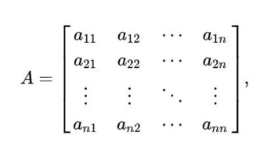
Se debe verificar que la diagonal de la matriz sea dominante, es decir, el coeficiente a11 debe ser mayor en su fila,
lo mismo con a22 y con a33 hasta ann. Puedes mover las filas para que se cumpla esa condición.
De igual forma se deben crear dos vectores, el vector X es donde están las variables de las ecuaciones y el vector b son
los coeficientes.
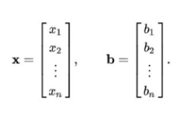
Una vez ordenados en la matriz y vectores correspodientes, se empieza a despejar las variables:
X2=(-a21*X1-...-a2n*Xn)/a22
Xn=(-an1*X1-an2*X2-...ann-1*Xn-1)/ann
Luego, sustituimos en la variable 2 (X2), tomando en cuenta los valores que acabamos de calcular.
X3=0.
Para la segunda iteración, se repite el procedimiento de la iteración 1. Sin embargo, los valores de las incognitas van a tomar el valor
calculado recientemente y ya no 0. A partir de esta iteración se puede calcular la norma:
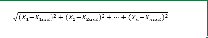
Donde X1 es el valor recien obtenido y X1ant es el valor obtenido en la iteración pasada.
Con la norma, verificamos si es menor o igual que la tolerancia. Si es menor, hemos terminado; si es mayor, hacemos otra iteración repitiendo todo el proceso.
Ejemplo
Tenemos el siguiente sistema de ecuaciones

Entonces procedemos a agregarlos a nuestra matriz A de tal forma que en la primera fila esten los coeficientes de X1, Y1, Z1; en la fila dos estarán los coeficientes de X2, Y2, Z2 y así sucesivavente
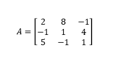
Para los valores independientes lo acomodaremos en un vector B
Procedemos a verificar que la diagonal de la matriz A sea dominante.
Nos damos cuenta que no es asi, por lo que debemos arreglar la matriz. Para ello, debemos mover las filas.
Intercambiamos fila 1 por fila 3, tanto en la matriz A como en el vector B
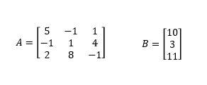
Como aún no se ha cumplido la condición, procedemos a realizar otro cambio, esta vez fila 2 por fila 3
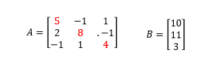
Y como podemos observar, la diagonal tiene los números mas grandes.
Nuestro siguiente paso es realizar los despejes, para ello podemos representar la matriz y el vecto de la siguiente forma:
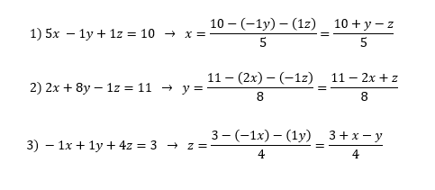
Y realizamos el despeje correspondiente.
El siguiente paso es crear una tabla, colocando los valores de la iteración 1 (todos valen 0)
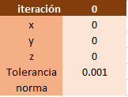
en la primera ecuacion se sustituye el valor de las variables y resuelve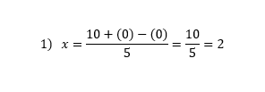
Para la segunda ecuacion, se sustituye usando el valor de X calculado anteriormente.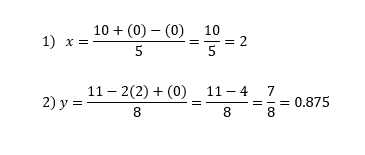
Para le tercera ecuacion se usan los valores calculados recientemente: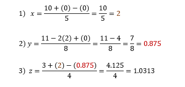
Colocamos todos los valores en la tabla, en una nueva columna: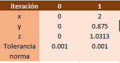
Y con estos valores podemos calcular la norma.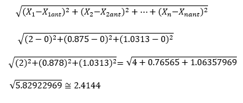
Considerando que X1, y1, z1 son los valores que acabamos de calcular. Los que tiene ant, son los valores de la iteracion anterior. Con estos datos, la tabla quedaría de la siguiente manera: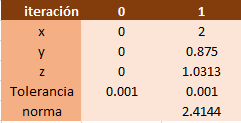
Si la norma > tolerancia, el proceso se repite.Iteracion 2
Ecuaciones:
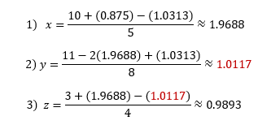
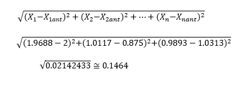
Tabla: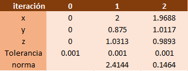
Hasta que Norma sea menor o igual a tolerancia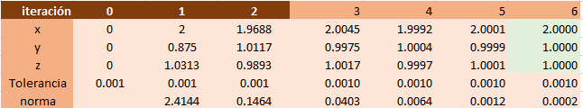
Entonces la respuesta serían los ultimos calculados: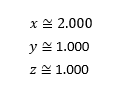